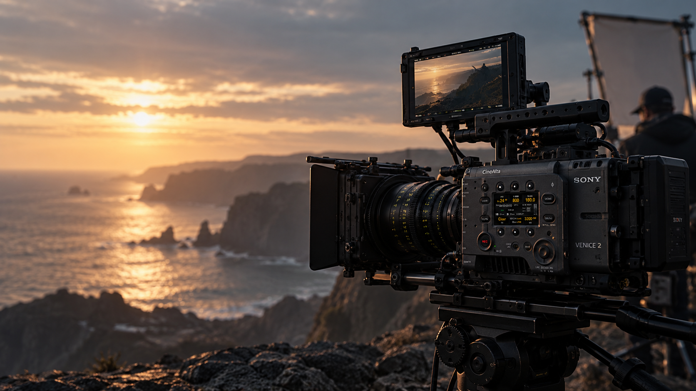
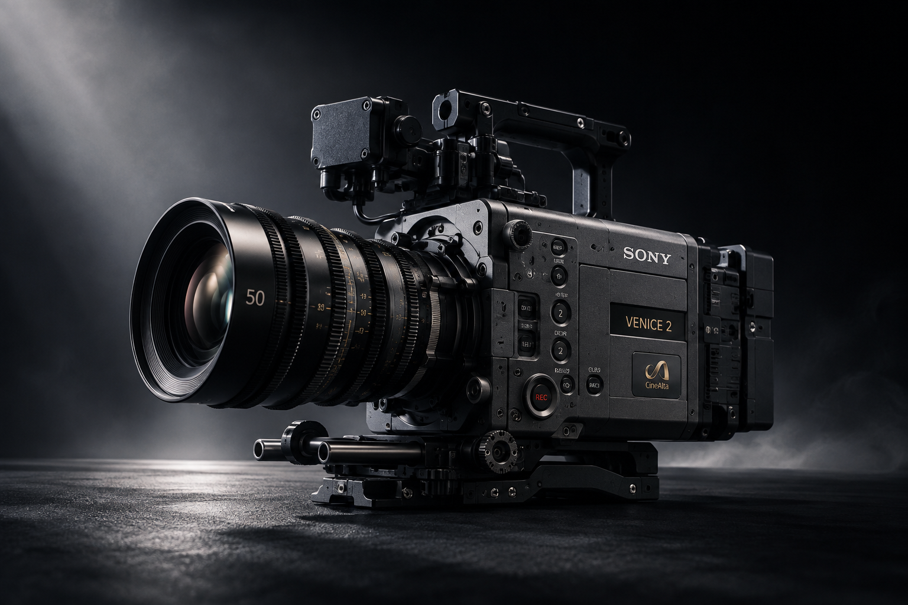
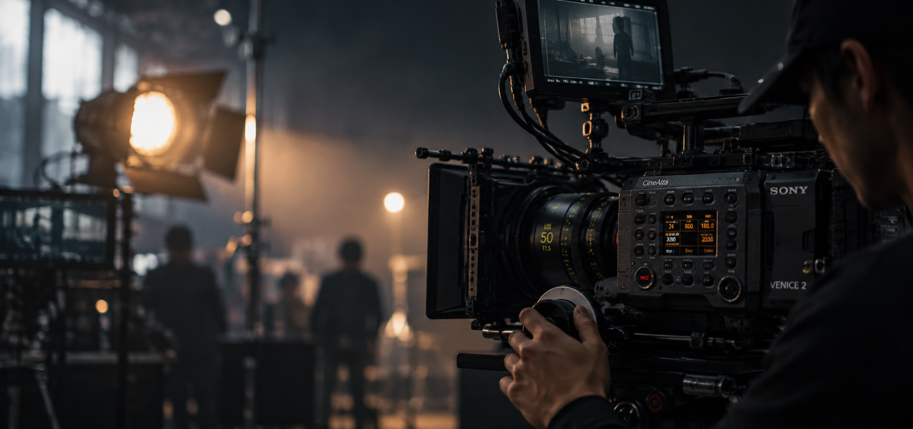

원본에서 영화의 색으로
슬라이더를 움직여 컬러 그레이딩 전후를 비교하세요.

풀프레임 6K 센서와 듀얼 베이스 ISO. 어두운 현장에서도 영화의 질감을 그대로 기록합니다.
이미지 위 빨간 점에 마우스를 올려보세요.


시네마 렌즈의 이미지 서클을 온전히 활용
하이라이트와 섀도를 모두 살리는 표현력
후반 작업에 최적화된 고화질 코덱
슬라이더를 움직여 컬러 그레이딩 전후를 비교하세요.
센서 해상도
다이내믹 레인지
내장 ND 필터
듀얼 베이스 최대 ISO 기준